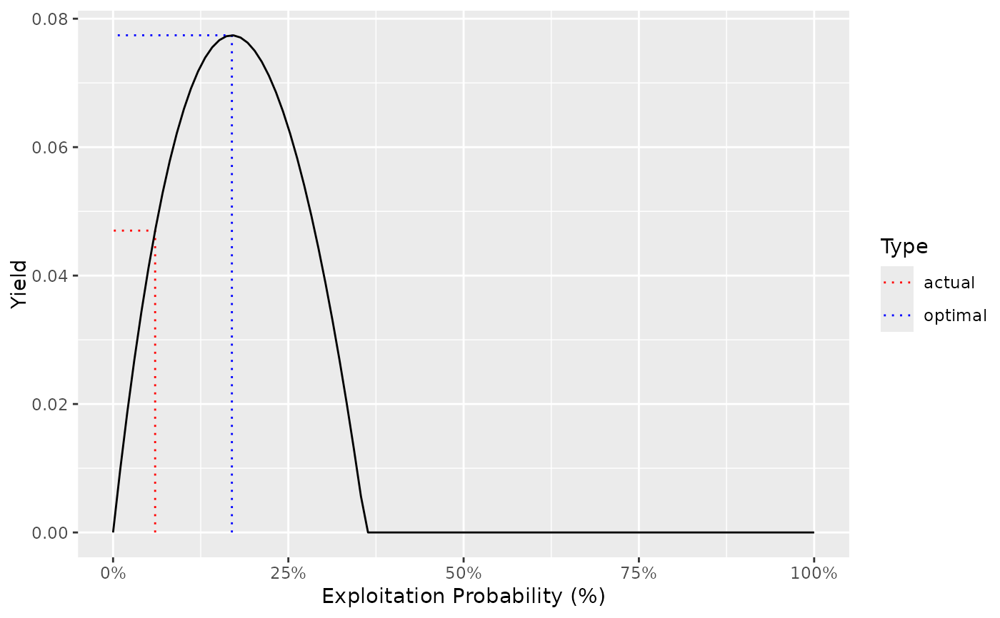

The population parameters for Bull Trout in Adams Lake from Bison et al (2003)
adams_bt_03An object of class ypr_population().
Bison, R., O’Brien, D., and Martell, S.J.D. 2003. An Analysis of Sustainable Fishing Options for Adams Lake Bull Trout Using Life History and Telemetry Data. BC Ministry of Water Land and Air Protection, Kamloops, B.C.
adams_bt_03
#> tmax: 20
#> k: 0.13
#> Linf: 131
#> t0: 0.2
#> k2: 0.13
#> Linf2: 131
#> L2: 1000
#> Wb: 3.4
#> Ls: 40
#> Sp: 100
#> es: 1
#> Sm: 0
#> fb: 1
#> tR: 1
#> BH: 1
#> Rk: 3.8
#> n: 0.3
#> nL: 0.3
#> Ln: 50
#> Lv: 40
#> Vp: 5
#> Llo: 0
#> Lup: 1000
#> Nc: 0
#> pi: 0.06
#> rho: 0
#> Hm: 0.15
#> Rmax: 1
#> Wa: 0.01
#> fa: 1
#> q: 0.1
ypr_plot_yield(adams_bt_03)
